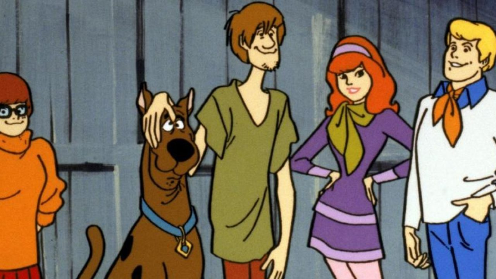
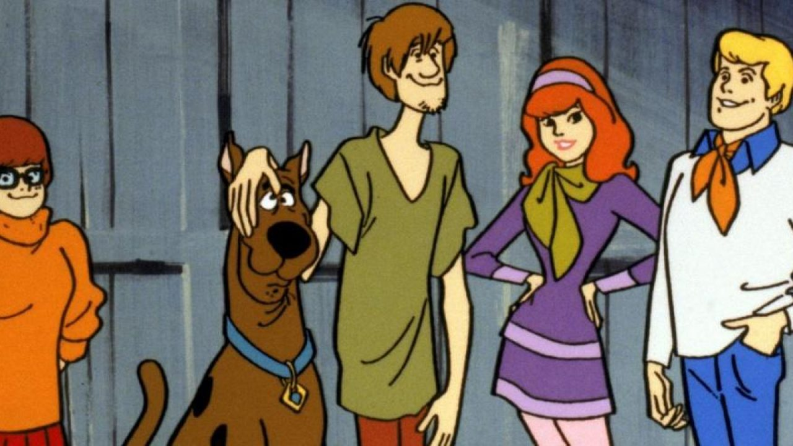

Scooby-Doo é uma franquia americana de mídia criada por Joe Ruby e Ken Spears. Inicialmente, a série foi produzida pela Hanna-Barbera. Após a absorção da Hanna-Barbera pela Warner Bros. em 2001, Scooby-Doo passou a ser produzida pela divisão de animação da Warner, a Warner Bros. Animation.
É o segundo desenho americano com o maior número de temporadas de todos os tempos, perdendo apenas para Os Simpsons, com 32 temporadas e mais de 550 episódios. Porém, com novas temporadas encomendadas, logo deverá ser o desenho antigo com maior número de temporadas.
A propriedade float do CSS determina que um elemento deve ser retirado do seu fluxo normal e colocado ao longo do lado direito ou esquerdo do seu containêr, onde textos e elementos em linha irão se posicionar ao seu redor.
LEFT, RIGHT, BOTH E NONE
float posiciona um elemento para sua esquerda ou para a sua direita (left, right)
float posiciona um elemento para sua esquerda ou para a sua direita (left, right)
float posiciona um elemento para sua esquerda ou para a sua direita (left, right)
float posiciona um elemento para sua esquerda ou para a sua direita (left, right)